linux bash 中定义了些奇怪的内置参数来管理,这些内置参数很有些意识.
bash属性相关
BASH
Bash 的二进制程序文件的路径：
BASHOPTS
以冒号分隔的已启用外壳程序选项列表。列表中的每个字词都是-sshopt内置命令的选项
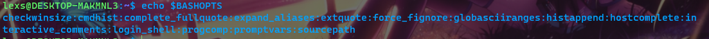
BASHPID
扩展为当前Bash进程的进程ID。这与$$某些情况下有所不同，例如不需要重新初始化Bash的子外壳。分配BASHPID无效。如果BASHPID 未设置，则即使随后将其重置，它也会丢失其特殊属性。
BASH_COMMAND
当前正在执行或将要执行的命令，除非外壳由于陷阱而正在执行命令，在这种情况下，这是在陷阱发生时执行的命令。如果BASH_COMMAND 未设置，则即使随后将其重置，它也会丢失其特殊属性。
BASH_SUBSHELL
当外壳程序在该子外壳程序或子外壳程序环境中开始执行时，在该子外壳程序或该子外壳程序环境中以一个递增。初始值为0。如果BASH_SUBSHELL 未设置，则即使随后将其重置，它也会失去其特殊属性。
BASH_VERSINFO
一个只读数组变量，其成员保存此Bash实例的版本信息。分配给数组成员的值如下：
BASH_VERSINFO[0]
主版本号（发行版）。
BASH_VERSINFO[1]
次要版本号（version）。
BASH_VERSINFO[2]
补丁程序级别。
BASH_VERSINFO[3]
构建版本。
BASH_VERSINFO[4]
发布状态（例如beta1）。
BASH_VERSINFO[5]
MACHTYPE的值.
BASH_VERSION
Bash当前实例的版本号。
HISTCMD
当前命令的历史记录编号或历史记录列表中的索引。的分配将HISTCMD被忽略。如果HISTCMD 未设置，则即使随后将其重置，它也会丢失其特殊属性。
HISTCONTROL
用冒号分隔的值列表，用于控制如何在历史记录列表中保存命令.
HISTFILE
命令历史记录保存到的文件名。默认值为〜/ .bash_history。
HISTFILESIZE
历史记录文件中包含的最大行数。为该变量分配值后，如果有必要，通过删除最旧的条目，历史记录文件将被截断以包含不超过该行数的文件。在退出shell时，将历史文件写入后也将被截断为该大小。如果值为0，则历史记录文件将被截断为零大小。非数值和小于零的数值禁止截断。外壳程序将默认值设置为HISTSIZE 读取任何启动文件后的值。
HISTIGNORE
用冒号分隔的模式列表，用于决定应在历史记录列表中保存哪些命令行。每个模式都锚定在行的开头，并且必须与整行匹配（没有隐式的’*”）。HISTCONTROL 在应用指定的检查之后，将针对该行对每个模式进行测试。除了正常的外壳模式匹配字符之外，’和’与上一个历史记录行匹配。’和’可以使用反斜杠转义；尝试进行匹配之前，请删除反斜杠。多行复合命令的第二行和后续行未经测试，并且不管的值如何都被添加到历史记录中 HISTIGNORE。模式匹配采用extglobshell选项的设置。
HISTIGNORE包含的功能HISTCONTROL。一种“和’与相同ignoredups，且模式为’[] *与…相同ignorespace。结合这两种模式，并用冒号隔开，可提供的功能ignoreboth。
HISTSIZE
历史记录列表中要记住的最大命令数。如果值为0，则命令不会保存在历史记录列表中。数值小于零会导致每个命令都保存在历史记录列表中（没有限制）。读取任何启动文件后，shell会将默认值设置为500。
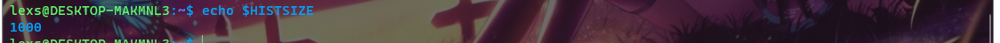
HISTTIMEFORMAT
如果设置了此变量且不为null，则其值用作strftime的格式字符串，以打印与history内置显示的每个历史记录条目关联的时间戳。如果设置了此变量，则将时间戳记写入历史记录文件，以便可以在Shell会话之间保留它们。这使用历史记录注释字符将时间戳记与其他历史记录行区分开。
HOSTFILE
包含与以下格式相同的文件名 / etc / hosts当shell需要完成一个主机名时，应该读取该文件。Shell运行时，可能会更改可能的主机名列表。在更改值之后下一次尝试完成主机名时，Bash将新文件的内容添加到现有列表中。如果HOSTFILE已设置，但没有值，或者未命名可读文件，则Bash尝试读取 / etc / hosts获取可能的主机名完成列表。如果HOSTFILE没有设置，主机名列表被清除。
HOSTNAME
当前主机的名称。
HOSTTYPE
描述运行Bash的机器的字符串。
IGNOREEOF
在收到EOF字符作为唯一输入时控制外壳的动作。如果设置，则该值表示EOF在外壳程序退出之前可以作为输入行上的第一个字符读取的连续字符数。如果变量存在但没有数字值或没有值，则默认值为10。如果变量不存在，则EOF表示输入到Shell的末尾。这仅对交互式外壳有效。
INPUTRC
Readline初始化文件的名称，覆盖默认值 〜/ .inputrc。
INSIDE_EMACS
如果Bash在shell启动时在环境中找到此变量，则假定shell在Emacs shell缓冲区中运行，并可能根据的值禁用行编辑TERM。
LANG
用于确定未特别选择的，以开头的变量的任何类别的语言环境类别LC_。
LC_ALL
此变量将覆盖指定区域设置类别的值LANG和任何其他 LC_变量。
LC_COLLATE
该变量确定排序文件名扩展结果时使用的排序规则顺序，并确定范围表达式，等价类以及文件名扩展和模式匹配内的整理序列的行为.
LC_CTYPE
此变量确定文件名扩展和模式匹配中的字符解释和字符类的行为.
LC_MESSAGES
此变量确定用于翻译带双引号的字符串的语言环境，后跟一个’$’。
LC_NUMERIC
此变量确定用于数字格式设置的语言环境类别。
LC_TIME
此变量确定用于数据和时间格式化的语言环境类别。
LINENO
当前正在执行的脚本或外壳函数中的行号。如果LINENO 未设置，则即使随后将其重置，它也会丢失其特殊属性。
PPID
Shell的父进程的进程ID。此变量是只读的。
PROMPT_COMMAND
如果设置了此变量并且是一个数组，则将每个set元素的值解释为要在打印主提示（$PS1）之前执行的命令。如果设置了此值，但未设置数组变量，则将其值用作执行命令。
PROMPT_DIRTRIM
如果将其设置为大于零的数字，则该值将用作扩展\w和 \W提示字符串转义符时保留的尾随目录组件的数量（请参阅控制提示）。删除的字符将替换为省略号。
PS
PS0
PS1 在读取命令之后和执行命令之前，此参数的值将像交互式外壳一样展开并显示。
PS3
此变量的值用作select命令提示符 。如果未设置此变量，则 select命令提示符为’＃？ ‘
PS4
像PS1一样扩展此参数的值， 并且扩展的值是在执行以下操作时在回显命令行之前打印的提示。-X选项已设。必要时，将扩展值的第一个字符复制多次，以指示多个间接级别。默认值为“+ ‘。
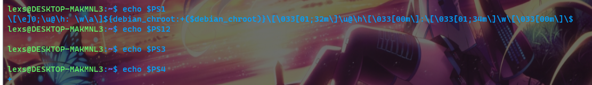
PWD
cd内置设置的当前工作目录。
RANDOM
每次引用此参数时，它都会扩展为0到32767之间的随机整数。为此变量分配一个值将为随机数生成器提供种子。如果RANDOM 未设置，则即使随后将其重置，它也会丢失其特殊属性。
READLINE_LINE
Readline行缓冲区的内容，与’绑定-x’ 。
READLINE_MARK
所述的位置标记在的Readline行缓冲器（保存插入点），用于与’使用，绑定-x’ 。插入点和标记之间的字符通常称为区域。
READLINE_POINT
插入点在Readline行缓冲区中的位置，用于与’绑定-x’ 。
REPLY
read内置的默认变量。
SECONDS
此变量扩展为启动外壳程序以来的秒数。分配给该变量会将计数重置为分配的值，并且扩展后的值将成为分配的值加上分配以来的秒数。Shell调用时的秒数和当前时间始终通过查询系统时钟来确定。如果SECONDS 未设置，则即使随后将其重置，它也会丢失其特殊属性。
SHELL
此环境变量扩展为外壳程序的完整路径名。如果外壳启动时未设置，则Bash为其分配当前用户登录外壳的完整路径名。
SHELLOPTS
以冒号分隔的已启用外壳程序选项列表。列表中的每个字词都是-oset内置命令的选项 （请参阅“设置内置”）。出现的选项SHELLOPTS是报告为“上由设置-o’。如果此变量在Bash启动时所在的环境中，则在读取任何启动文件之前，将启用列表中的每个shell选项。此变量是只读的。
SHLVL
每次启动新的Bash实例时增加一。这是为了计算您的Bash shell嵌套的深度。
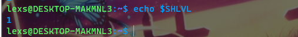
SRANDOM
每次引用该变量时，它都会扩展为32位伪随机数。随机数生成器在支持以下功能的系统上不是线性的/ dev / urandom或arc4random，因此每个返回的数字与其前面的数字都没有关系。不能为随机数生成器提供种子，因此对此变量的分配无效。如果SRANDOM 未设置，则即使随后将其重置，它也会丢失其特殊属性。
TIMEFORMAT
此参数的值用作格式字符串，该字符串指定time 应如何显示以保留字为前缀的管道的定时信息。’％字符引入了转义序列，该序列被扩展为时间值或其他信息。转义序列及其含义如下：大括号表示可选部分。
%%
文字’％’。
%[p][l]R
经过的时间（以秒为单位）。
%[p][l]U
用户模式下花费的CPU秒数。
%[p][l]S
在系统模式下花费的CPU秒数。
%P
CPU百分比，计算为（％U +％S）/％R。
可选的p是指定精度的数字，即小数点后的小数位数。值为0不会输出小数点或小数。小数点后最多可指定三个位置；大于3的p的值更改为3。如果未指定p，则使用值3。
可选l以MM m SS形式指定更长的格式，包括分钟。FF s。p的值确定是否包括分数。
如果未设置此变量，则Bash的行为就好像它具有该值
$’\nreal\t%3lR\nuser\t%3lU\nsys\t%3lS’
如果值为空，则不会显示任何计时信息。显示格式字符串时，将添加尾随换行符。
TMOUT
如果设置为大于零的值，将TMOUT被视为read内置的默认超时。的select命令（见条件结构）如果终止输入不之后到达TMOUT时输入来自终端秒。
在交互式外壳程序中，该值解释为发出主提示后等待一行输入的秒数。如果没有完整的输入行，Bash将在等待该秒数后终止。
TMPDIR
如果已设置，则Bash将其值用作目录的名称，Bash在该目录中创建临时文件以供Shell使用。
UID
$UID 表示 用户ID号，是当前用户的用户标识号, 记录在 /etc/passwd 文件中。这是当前用户的真实 id, 即使只是通过使用 su 命令来临时改变为另一个用户标识, 这个 id 也不会被改变。$UID 是一个只读变量，不能在命令行或者脚本中修改它。
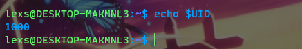
GROUPS
当前用户所属的组。
这是一个当前用户的组 id 数组, 与记录在 /etc/passwd 文件中的内容一样：
位置参数
所谓的位置参数(positional parameter)，指的是 Shell 脚本的命令行参数
$0
$0表示当前进程(脚本)的名.
$n
当n>0时，$n表示传入脚本的第n个值。
$#
表示传入的位置参数的个数。
$* 与$@
$*与$@ 都表示所有的位置参数.（但在分割上，略为有点区别）
test：
1 | for arg in $* |
“$*” 与”$@”
“$*” 与”$@” 也是表把所有参数。但是会把字符串作为一个参数来看待。
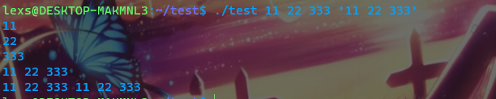
$!
运行在后台的最后一个作业的 PID
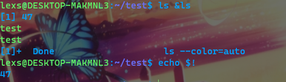

$_
这个变量保存之前执行的命令的最后一个参数的值.
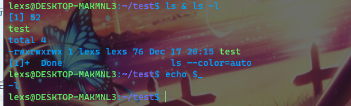
$$
脚本自身的 PID (当前 bash 进程的 PID)：
$?
$? 保存了最后所执行的命令的退出状态码，一般表示命令执行成功或失败。当函数返回之后，$? 保存函数中最后所执行的命令的退出状态码。这就是 bash 对函数 “返回值” 的处理方法。当一个脚本退出，$? 保存了脚本的退出状态码，这个退出状态码也就是脚本中最后一个执行命令的退出状态码。 0 表示成功，其它值表示错误。
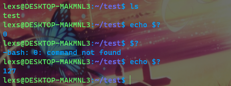
参数扩展
参数扩展是从引用实体获取值的过程，例如扩展变量以打印其值。在扩展时，您可以使用参数或其值执行非常讨厌的操作.
$ {PARAMETER：x：y}
将PARAMETER的值进行切片处理，x是开始的位置，y是取的个数（没有y默认取完）。
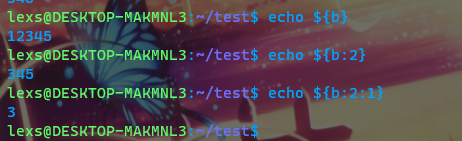
$ {！PARAMETER}
获得PARAMETER的值所对应的变量的值。
${!varprefix*}, ${!varprefix@}
匹配所有varprefix开头的变量名。
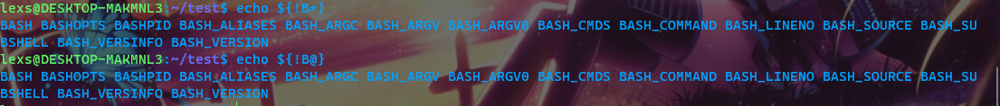
参考文献
https://www.cnblogs.com/sky-zhao/archive/2004/01/13/4191039.html